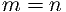

July 15, 2017, Christopher D. Carroll Equiprobable-Returns
July 15, 2017, Christopher D. Carroll Equiprobable-Returns
July 15, 2017, Christopher D. Carroll Equiprobable-Returns
This handout starts by defining a convenient notation to represent two rate-of-return shocks that are distributed according to a multivariate lognormal that allows for nonzero covariances. It next presents a computationally simple method for constructing a numerical approximation to that joint distribution. The final section uses both the numerical approximation, and more accurate (but enormously slower) standard numerical integration tools to assess the accuracy of the Campbell-Vicera analytical approximation to the solution to the optimal portfolio choice problem described in Portfolio-Multi-CRRA.
Consider a set of two normally distributed risks
which are statistically independent () even though the scale of shock 1’s standard deviation is determined by the proportionality factor multiplied by the value of shock 2’s standard deviation, . (This permits us to increase or decrease the size of both risks by changing and to adjust the
relative size of risk 1 vs risk 2 by adjusting .)
and to adjust the
relative size of risk 1 vs risk 2 by adjusting .)
The are interpreted as the logarithms of level variables , and the means of the log variables have been chosen such that the expectations of the levels are independent of the size of the risk (cf. MathFacts). That is, defining for :
From the first shock we can construct a log rate-of-return variable that can be represented equivalently in either of two ways:
where ; the notation for is motivated by the fact that the addition of the extra term cancels the nonzero mean of the original . Then where note to avoid confusion that while .Using and , we can by analogy define a second return
for some constants and .Since is the only component of that is correlated with ,
Thus, the parameter controls the covariance between the risky returns. If
we set then  (the returns are independent).
(the returns are independent).
Next we want to find the value of such that the expected level of the return is unaffected by (so that we will be able to explore independently the distinct effects of the components of each shock and their covariance):
![´r
R2 ≡ Et [R2,t+1 ] = e 2 (11)](Equiprobable-Returns33x.png)
Using standard facts about lognormals (cf. MathFacts), and for convenience defining , we have
which means that we can rewrite (8) and (10) directly as
Hence, from the independent mean-one lognormally distributed shocks
and , we have constructed a pair of jointly lognormally distributed shocks
whose covariance is controlled by the parameter , whose relative and absolute
variances are controlled by the parameters and  , and whose means are
and .
, and whose means are
and .
To sum up, the process can be described in either of two ways:
|
|
with covariance matrix
|
| (17) |
where a final useful result that follows from (17) and (11) is
To reduce clutter, define  and interpret as , so that we can
write the expectation of some function that depends on the realization of the
return shocks as:
and interpret as , so that we can
write the expectation of some function that depends on the realization of the
return shocks as:
Such approximations often take the approach of replacing the distribution function with a discretized approximation to it; appropriate weights are attached to each of a finite set of points indexed by and , and the approximation to the integral is given by:
where various methods are used for constructing the weights and the nodes (corresponding to the pairs). The matrices and contain the conditional mean values of and associated with each of the regions. Perhaps the most popular such method is Gauss-Hermite interpolation (see
Judd (1998) for an exposition, or Kopecky and Suen (2010) for a recent
candidate for a better choice). Here, we will pursue a particularly simple and
intuitive alternative: Equiprobable discretization. In this method,  and
boundaries on the joint CDF are determined in such a way as to divide up the
total probability mass into submasses of equal size (each of which therefore has a
mass of ). This is conceptually easier if we represent the underlying shocks
as statistically independent, as with and  above; in that case, each
submass is a square region in the and grid. We then compute the
average value of and conditional on their being located in each of the
subdivisions of the range of the CDF. Since and are IID, the
representation of the approximating summation is even simpler than (21):
above; in that case, each
submass is a square region in the and grid. We then compute the
average value of and conditional on their being located in each of the
subdivisions of the range of the CDF. Since and are IID, the
representation of the approximating summation is even simpler than (21):
Figure 1 compares the computed optimal portfolio share for a numerical solution using the built-in numerical optimizer and maximization functions (the lowest, black, locus), the Campbell-Viceira solution (the highest, red locus) and an equiprobable approximation using 20 approximation points (green, middle) as well as the solution using the equiprobable approximation at an evenly-spaced grid of points (blue dots).
Careful examination indicates that the numerical approximation is quite close to the full numerical solution, while the CV approximation diverges substantially from the numerical answer. The tradeoff is that the equiprobable solution is about 2000 times slower than the CV approximation, while the direct solution is more than 100 times slower than the equiprobable solution. Depending on the requirements of the problem being examined, these differences in efficiency can make a tremendous difference in the feasibility of a research project.2
judd, kenneth l. (1998): Numerical Methods in Economics. The MIT Press, Cambridge, Massachusetts.
kopecky, karen a., and richard m.h. suen (2010): “Finite State Markov-Chain Approximations To Highly Persistent Processes,” Review of Economic Dynamics, 13(3), 701–714, http://www.karenkopecky.net/RouwenhorstPaper.pdf.